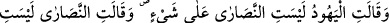
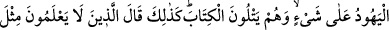
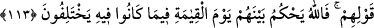

Korkusu olmayan adama “korkma!” demeye hâcet yok.
Derse ihtiyacı olmayan adama nasıl ders verilebilir?
113. Hepsi de kitabı (Tevrât ve İncil’i) okumakta oldukları halde yahûdîler:
Hıristiyanlar doğru yolda değillerdir, dediler. Hıristiyanlar da: Yahûdîler doğru
yolda değillerdir, dediler. Kitabı bilmeyenler de birbirleri hakkında tıpkı onların
söylediklerini söylediler. Allah ihtilâfa düştükleri hususlarda kıyâmet günü onlar
hakkında hükmünü verecektir.
Bu âyet, yahûdî ve hristiyanlardan herbirinin diğerini sapıklığa nisbet etmelerini
beyân etmektedir. Bunlar birbirlerinin, sahîh ve hesâba katılacak bir şey üzere
olmadıklarını söylüyorlar. Halbuki bunlar, ilim ve kitap ehli kişiler olup
okumaktadırlar. Allah’ın kitaplarından birini, okuyup ona inanan birisinin, diğerlerini
yalanlamaması gerekir. Çünkü bu kitapların hepsi Allah katından olup birbirlerini tasdik
ederler.
“Bilmeyenler de...” Yâni, puta tapanlar, inkârcılar ve benzeri câhiller de her din
sahibi için bilenlerin dedikleri gibi; “Onlar sahîh ve önemsemeye değer bir yolda
değildir.” dediler.
Bu âyette okuma yazma bilen yahûdî ve hıristiyanlar kınanmakta ve azarlanmaktadır.
Çünkü yaptıkları, bilmeyenlerin yaptıklarıdır.
Eğer “Allah Teâlâ, onlar hakkında ne şekilde hükmedecektir?” denirse, şöyle cevap
veririz: “Allah her fırkaya, gerekli azâbı ayırıp verecektir.”
Her fırka, kendi görüşünden memnûndur. Bu durum sadece dalâlet fırkaları için
geçerli olmayıp bilâkis, sûfîler, şeyhler ve âlimler arasında da cârîdir. Her grub bir
diğerini hatâya nisbet edip durmaktadır. Oysa yapılması gereken en iyi şey, Hakk’a ve
hidâyete tâbi olmaktır. Meşâyihden birisi şöyle demiştir: “Nefsini tezkiye etmeden,
mebde’ ve meâdı bilmeden sadece aşağılık dünyâ menfaati için ehl-i kalb ve ehl-i irşâd
olduğunu iddia eden kişinin azâbı Mi’râc gecesi Hz. Peygamber’in gördüğü göğüsleri
makasla kesilen kadınların azâbından kat kat daha fazladır. Hz. Peygamber o vakit:
“Bunların durumu nedir?” diye Cebrâîl’e sormuş. Cebrâîl de: “Bunlar zinâ eden
kadınlardır.” diye cevaplamıştı. Delilsiz dâvâ bâtıldır, sahibi de hem sapık hem de
saptırıcıdır. Böyle bir iddiâ sahibi, aynen zinâ eden kadın gibidir; Hevâsına tâbi olarak
böyle bir kişiye uyan kimse de, veled-i zinâ gibidir. Veled-i zinâ ise hükmen helâk
olmaya mahkûmdur; zirâ kendisini yetiştirecek bir mürebbîden yoksundur. Bid’at ehline